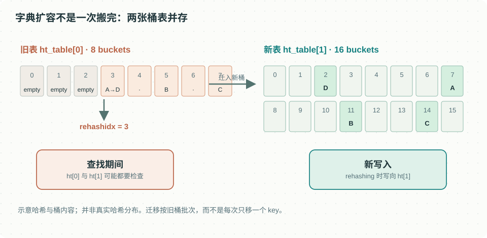
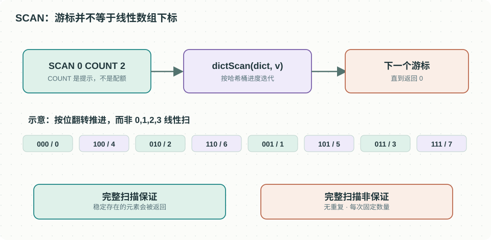

Chapter 06 · Redis 7.2.4 Source Anatomy
字典与渐进式 rehash：一次只搬一部分桶
以真实 dict 结构为起点，拆解 SipHash、双表 rehash、桶迁移预算与 SCAN 游标的正确语义。
把百万个键放进内存，为什么不直接用数组？
一个 Redis 数据库中的键并不连续：user:42、session:abc 与 cart:9 都是字节字符串，且新键不断插入、旧键不断删除。若采用按键名排序的数组，每次插入可能需要 O(n) 的移动；如果每次查找都线性扫描，随着键数增长会失去可接受的响应时间。Redis 选择哈希字典作为通用键空间索引，并在负载增长时逐步重新分配桶。
这里必须区分两层：数据库 redisDb.dict 是“键 → 值对象”的索引；用户看到的 Hash 类型，其内部在达到阈值后也可能用字典，但它与数据库键空间不是同一张表。键的 TTL 单独记录在 redisDb.expires，也不意味着每个键在两个字典里都出现。
准确打开 dict.h：Redis 7.2.4 已没有旧式 dictht 字段
许多二次教程仍将 dict 画成 dictht ht[2]。这套示意可以解释早期结构，但不能写成 7.2.4 的真实定义。此版本的 dict.h 直接维护两个桶数组指针及各自的已用计数、指数形式的桶尺寸。
/* 摘录自 Redis 7.2.4 src/dict.h，省去 metadata 与部分注释 */
struct dict {
dictType *type;
dictEntry **ht_table[2];
unsigned long ht_used[2];
long rehashidx; /* -1 表示没有迁移 */
int16_t pauserehash;
signed char ht_size_exp[2]; /* bucket size = 1 << exp */
};dictEntry 在 dict.c 定义，通常包含 key、可存指针或整数/浮点值的 union，以及碰撞链上的 next。但 dictType 还允许特殊的无 value 条目和附加 metadata，因此“每条 entry 必定按同样大小独立 malloc”也不完全准确。桶数由 2 的幂确定，桶位置取哈希值与掩码的位与。
| 真实字段 / 机制 | 功能 | 阅读时别混淆 |
|---|---|---|
ht_table[0/1] | 旧/新桶数组 | 它们是 dictEntry**，不是 dictht 对象 |
ht_used[0/1] | 两张表各自的条目计数 | 不是可用桶数 |
ht_size_exp[0/1] | 指数形式的表大小 | 实际桶数是 1<<exp |
rehashidx | 下一批需迁移的旧桶位置 | 不是下一条 key 的编号 |
pauserehash | 保护需要一致性的迭代 | 不代表全部修改都被锁住 |
默认字节哈希函数通过 dictGenHashFunction() 调用 siphash()，实现位于 siphash.c。Redis 7.2.4 不应再被描述成“默认使用 MurmurHash2”。在上层不同用途的 dict 还可以经 dictType 自定义哈希行为。
两张表并存：逐桶移动而非逐 key 发任务

dictRehash(d,n) 中的 n 是计划处理的桶数；遇到空桶时为了限制工作量，最多连续检查大约 10*n 个空桶。真正迁移时会遍历旧桶的 entry 链，将其逐条挂进新桶数组，调整 ht_used[0/1]。已经搬完的旧桶归零，rehashidx 向前推进。等 ht_used[0] == 0 后，旧桶数组被释放，新桶成为主表。
/* 教学控制流：不是 dictRehash 的可编译逐行复制 */
rehash(d, n):
while (n > 0 && old_used > 0):
skip_empty_buckets_with_bound()
for each entry in old_bucket[rehashidx]:
move_entry_to_new_bucket(entry)
old_bucket[rehashidx] = NULL
rehashidx++
n--
if old_used == 0:
replace_old_table_with_new()
rehashidx = -1通常的字典操作会通过 _dictRehashStep() 分担一点工作，服务器还可能按维护节奏推进。但不能把它称为真正的并行“后台搬迁线程”；大部分增量步骤仍发生在请求执行相关路径中。某个旧桶碰撞链很长时，搬迁这整桶的代价仍可能明显高于 O(1)。
迁移期间查找、插入为什么不能只看旧表
假设键 k 已在旧桶 0 迁至新表；继续只查旧表就会误判“键不存在”。所以 rehashing 期间，查找和删除等路径需要考虑两张表；新插入通常进入第二张表，避免一边把旧桶搬走，一边又往旧桶增加新条目。具体查找路径可追 dictFind / dictFindPositionForInsert。
字典会按负载、resize 策略与容量增长触发扩容，是否允许立即 resize 还与持久化子进程和内存策略有关。不要把“装载因子达到某个常数就必定瞬间扩容”写成唯一规则；观察 dict_can_resize、dict_force_resize_ratio 与 _dictExpandIfNeeded 的共同作用。
dictRehash 解释成“只要调用就马上迁移 n 个非空桶”也不精确。空桶扫描有预算，暂停迁移和 resize 策略还可能使本次操作不执行。SCAN 为什么可以重复返回同一个键？

客户端的 SCAN cursor MATCH pattern COUNT hint 是按游标分批取出候选键。COUNT 是工作量提示，而非保证返回精确个数；每次可能返回零个，也可能返回较多个。dictScan() 结合位反转方法推进游标，以兼容扩缩容前后的桶位置映射。在扫描期间，数据库也可能被其他命令修改，因此 Redis 文档明确不保证没有重复结果。
对一次从游标 0 开始并最终回到 0 的完整迭代，整个过程中一直存在的元素应被返回，整个过程中一直不存在的元素不应出现；扫描期间新增或删除的元素则没有同等保证。这并非数据库事务快照。消费端必须在业务意义上容忍重复，不能将 SCAN 做成“逐键恰好处理一次”的证明。
./src/redis-cli -p 6390 SET d:key:a 1
./src/redis-cli -p 6390 SET d:key:b 2
./src/redis-cli -p 6390 SET d:key:c 3
# 从 0 开始，反复把输出中的下一个游标用于后续 SCAN
./src/redis-cli -p 6390 SCAN 0 MATCH 'd:key:*' COUNT 1若连接到 cluster，SCAN 只迭代当前被访问节点的键空间，不能由一次单节点扫描推断整个集群已遍历完成。
可复现：检查键空间与遍历特性
在本地 Redis 7.2.4 的隔离实例执行下面命令。这里只示例客户端行为；dict 的内部 rehashidx 不是公开稳定 API，想查看具体阶段应在对应源码里设置 GDB 断点而不是杜撰监控指标。
# 终端 A：仅用于实验的临时实例
./src/redis-server --bind 127.0.0.1 --port 6390 --save "" --appendonly no
# 终端 B：构造若干键
for i in $(seq 1 100); do ./src/redis-cli -p 6390 SET "d:$i" "$i" > /dev/null; done
./src/redis-cli -p 6390 DBSIZE
./src/redis-cli -p 6390 --scan --pattern 'd:*' | sort -u | wc -l
./src/redis-cli -p 6390 INFO keyspace
./src/redis-cli -p 6390 SHUTDOWN NOSAVE没有并发写入且只存在这组新键时，DBSIZE 和去重后的扫描计数预期都是 100；这不等于它们的输出顺序一致，也不意味着活跃写入场景的 SCAN 提供快照一致性。想观察迁移细节，可在 dictRehash() 断点打印两个 ht_used 与 rehashidx。
总结：三个必须分开的概念
哈希函数决定每条 key 的初始桶位；双表 rehash决定扩缩容期间如何迁移和查找；SCAN 游标决定如何在多次客户端调用间继续遍历。它们互相影响但不等价。尤其不要把“渐进式 rehash”说成真正的并行线程，也不要因 SCAN 可能返回重复值就断言它会漏掉整个扫描周期始终存在的键。
下一章将研究相反的需求：不是通过哈希直接定位某个成员，而是把分数有序排列，并尽快求出排名或范围。
固定版本参考
源码锚定 Redis 7.2.4。随版本与配置变化的行为必须用对应二进制单独验证；下文的教学图不等于所有异常路径的完整调用图。